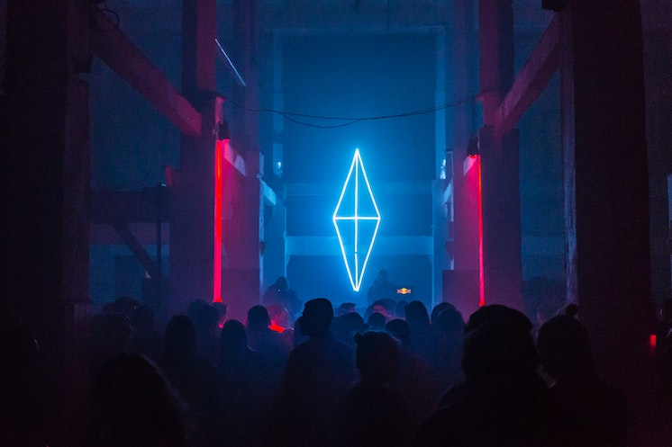
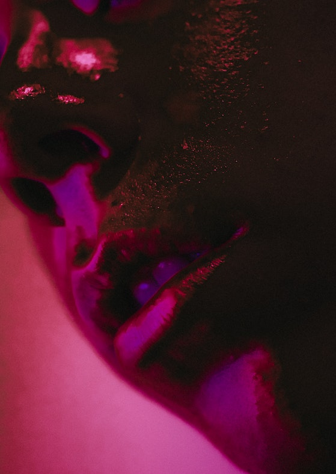
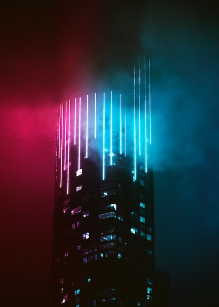
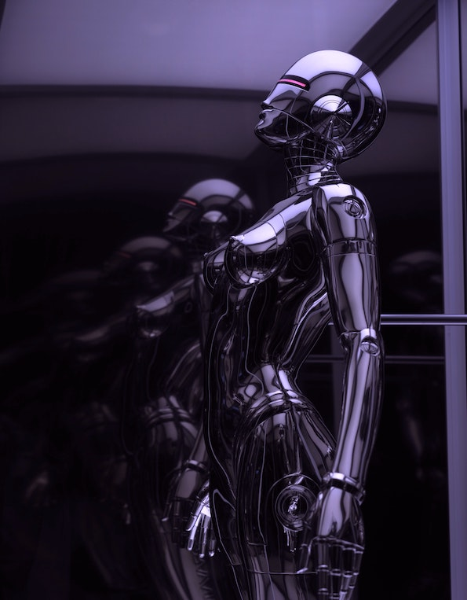
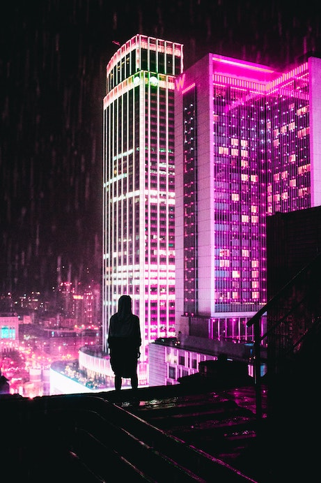

The future is here and it's neon-bright. But the neverending pulse of endless new connections still leaves you hungry for something real...


"That’s sad. How plastic and artificial life has become. It gets harder and harder to find something…real." Nin interlocked his fingers, and stretched out his arms. "Real love, real friends, real body parts…" — Jess C. Scott, "The Other Side of Life"


"Their attitudes crossed anything-goes California bi-sexuality with edgy Brit-punk sneer, a combination that led to a completely novel form of rebellion: wet-kissing strangers on the street." — Steven Kotler, "Last Tango in Cyberspace"

"Flirting has to be the original form of guerrilla marketing, from back before markets even existed." — Steven Kotler, "Last Tango in Cyberspace"